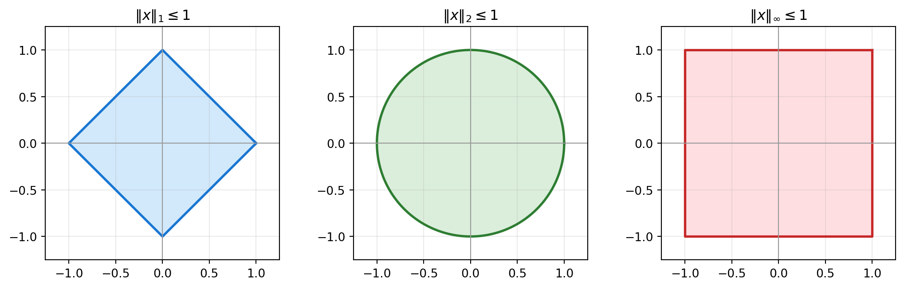

import numpy as np
from numpy import linalg as LA
x = np.array([-1, 2, -3])
print("||x||_1 =", LA.norm(x, 1))
print("||x||_2 =", LA.norm(x, 2))
print("||x||_inf =", LA.norm(x, np.inf))Lecture 4 — Vector Norms and Matrix Norms
Handout: Foundations of and Exercises in Numerical Analysis
TipHow to use this handout — Evolving Study Notes with an AI Tutor
This handout is the main material for Lecture 4. The companion slides (4th.html) only contain exercise announcements and special class instructions; all the mathematical content lives here.
Like the previous handouts, this file is designed to grow with you. Whenever a line confuses you, ask the AI tutor (e.g. GitHub Copilot Chat in VS Code) and it will insert a Q&A block directly into this file, exactly where the question lives. Over the semester, your copy of this handout becomes your own annotated textbook.
The 30-second workflow
Step 0 — Once per chat session. Open AI_TUTOR.md in VS Code, then press ⌘L (Mac) / Ctrl+L (Win/Linux) so the file is attached to the chat, and send a short prime message such as:
Read this file. From now on, follow these rules whenever I ask
about my handout.This gives the AI the Q&A format once, so you don’t have to re-attach it for every question.
Then, for each question:
- Open this handout (
4th-handout.qmd) in the editor. - Select the line you don’t understand.
- Press
⌘L/Ctrl+L— your selection (and this file) are attached to the same chat as Step 0. - Just ask in plain language, e.g. “I don’t get this line — can you add a Q&A block here?”
- Re-render:
quarto render 4th-handout.qmd— your question and its answer are now part of the handout (collapsed by default; click to expand).
Why prime once with
AI_TUTOR.mdand then point with⌘L? The rules file is long; sending it every time wastes context. Loading it once and then pointing at the exact line you’re stuck on with⌘Lkeeps the AI focused on your question.
See AI_TUTOR.md at the repo root for the full rule set and the Q&A block format.
1 Why Norms Matter
Numerical analysis is full of statements such as “the computed answer is close to the true answer.” To make this precise, we need a way to measure how large the error is.
For this purpose, we need a way to measure the size of a vector, the size of an error vector, and the size of a matrix acting on vectors. This is the role of norms.
Norms are also indispensable for convergence analysis, which is one of the central themes of numerical analysis.
In this lecture we work mainly in \(\mathbb{R}^n\). The same ideas extend almost immediately to \(\mathbb{C}^n\).
NoteA useful mental model
A vector norm answers:
How large is this vector?
A matrix norm answers:
How much can this matrix stretch a vector?
2 Vector Norms
2.1 Definition
A real-valued function
\[ \|\cdot\| : \mathbb{R}^n \to \mathbb{R} \]
is called a vector norm if it satisfies the following three properties for all \(x, y \in \mathbb{R}^n\) and all \(\alpha \in \mathbb{R}\):
| Property | Name | Meaning |
|---|---|---|
| \(\|x\| \geq 0\), and \(\|x\| = 0 \Longleftrightarrow x = 0\) | Positivity | only the zero vector has size zero |
| \(\|\alpha x\| = |\alpha|\,\|x\|\) | Homogeneity | scaling a vector scales its size |
| \(\|x + y\| \leq \|x\| + \|y\|\) | Triangle inequality | going directly is no longer than going via a detour |
The triangle inequality is often the most important one. It lets us bound complicated errors by breaking them into simpler pieces.
2.2 The \(\ell^p\) Norms
For \(1 \leq p < \infty\), the \(\ell^p\) norm is defined by
\[ \|x\|_p = \left(\sum_{i=1}^{n} |x_i|^p\right)^{1/p}. \]
The \(\ell^\infty\) norm, also called the max norm, is defined by
\[ \|x\|_\infty = \max_{1 \leq i \leq n} |x_i|. \]
In numerical analysis, the most common cases are \(p = 1\), \(p = 2\), and \(p = \infty\):
\[ \|x\|_1 = \sum_{i=1}^n |x_i|, \qquad \|x\|_2 = \left(\sum_{i=1}^n |x_i|^2\right)^{1/2}, \qquad \|x\|_\infty = \max_i |x_i|. \]
2.3 Example
Let
\[ x = \begin{pmatrix} -1\\ 2\\ -3 \end{pmatrix}. \]
Then
\[ \|x\|_1 = |-1| + |2| + |-3| = 6, \]
\[ \|x\|_2 = \sqrt{(-1)^2 + 2^2 + (-3)^2} = \sqrt{14}, \]
and
\[ \|x\|_\infty = \max\{|-1|, |2|, |-3|\} = 3. \]
TipClick to reveal the output
||x||_1 = 6.0
||x||_2 = 3.7416573867739413
||x||_inf = 3.02.4 Unit Balls in \(\mathbb{R}^2\)
The set of all vectors whose norm is at most \(1\) is called the unit ball of the norm. Different norms define different shapes.

3 Properties of Standard Vector Norms
3.1 Proposition
The \(\ell^1\), \(\ell^2\), and \(\ell^\infty\) norms satisfy the norm properties (positivity, homogeneity, and triangle inequality).
For \(\ell^1\) and \(\ell^\infty\), the proof follows directly from the ordinary triangle inequality for real numbers:
\[ |a + b| \leq |a| + |b|. \]
For \(\ell^2\), the triangle inequality is the nontrivial part. It follows from the Cauchy-Schwarz inequality:
\[ \left|\sum_{i=1}^n a_i b_i\right| \leq \left(\sum_{i=1}^n a_i^2\right)^{1/2} \left(\sum_{i=1}^n b_i^2\right)^{1/2}. \]
This proposition is the mathematical target of Exercise 4.1.
3.2 Equivalent Norms
Let \(\|\cdot\|_A\) and \(\|\cdot\|_B\) be two norms on \(\mathbb{R}^n\). They are called equivalent if there exist positive constants \(M\) and \(M'\) such that
\[ M'\|x\|_A \leq \|x\|_B \leq M\|x\|_A \qquad \text{for all } x \in \mathbb{R}^n. \]
In finite-dimensional spaces, any two norms are equivalent. The full proof is beyond this lecture, but the standard \(\ell^1\), \(\ell^2\), and \(\ell^\infty\) norms already show the idea.
3.3 Inequalities Between \(\ell^1\), \(\ell^2\), and \(\ell^\infty\)
For \(x \in \mathbb{R}^n\), we have
\[ \|x\|_2 \leq \|x\|_1 \leq \sqrt{n}\,\|x\|_2, \tag{5} \]
\[ \|x\|_\infty \leq \|x\|_1 \leq n\,\|x\|_\infty, \tag{6} \]
and
\[ \|x\|_\infty \leq \|x\|_2 \leq \sqrt{n}\,\|x\|_\infty. \tag{7} \]
These are the inequalities you will check numerically in Exercise 4.2.
import numpy as np
from numpy import linalg as LA
rng = np.random.default_rng(2026)
n = 5
x = rng.normal(size=n)
norm_1 = LA.norm(x, 1)
norm_2 = LA.norm(x, 2)
norm_inf = LA.norm(x, np.inf)
print("x =", x)
print("||x||_2 <= ||x||_1 <= sqrt(n)||x||_2")
print(norm_2, "<=", norm_1, "<=", np.sqrt(n) * norm_2)
print()
print("||x||_inf <= ||x||_1 <= n||x||_inf")
print(norm_inf, "<=", norm_1, "<=", n * norm_inf)
print()
print("||x||_inf <= ||x||_2 <= sqrt(n)||x||_inf")
print(norm_inf, "<=", norm_2, "<=", np.sqrt(n) * norm_inf)
TipClick to reveal the output
x = [-0.79312248 0.24057128 -1.89632635 1.39577171 0.63829474]
||x||_2 <= ||x||_1 <= sqrt(n)||x||_2
2.576542309042087 <= 4.964086559332149 <= 5.7613237499223775
||x||_inf <= ||x||_1 <= n||x||_inf
1.8963263495990657 <= 4.964086559332149 <= 9.481631747995328
||x||_inf <= ||x||_2 <= sqrt(n)||x||_inf
1.8963263495990657 <= 2.576542309042087 <= 4.2403146252275424 Matrix Norms
4.1 Induced Matrix Norms
Let \(A \in \mathbb{R}^{n \times n}\). Once a vector norm is fixed, the corresponding induced matrix norm or operator norm is defined by
\[ \|A\| = \max_{x \in \mathbb{R}^n \setminus \{0\}} \frac{\|Ax\|}{\|x\|}. \]
This is the maximum stretching factor of the matrix \(A\).
Equivalently,
\[ \|A\| = \max_{\|x\| = 1} \|Ax\|. \]
Why? For any \(x \neq 0\), define \(y = x / \|x\|\). Then \(\|y\| = 1\), and
\[ \frac{\|Ax\|}{\|x\|} = \left\|A\frac{x}{\|x\|}\right\| = \|Ay\|. \]
4.2 Basic Properties
The induced matrix norm satisfies the following properties:
- \(\|A\| \geq 0\), and \(\|A\| = 0 \Longleftrightarrow A = 0\).
- \(\|\alpha A\| = |\alpha|\,\|A\|\) for all \(\alpha \in \mathbb{R}\).
- \(\|A + B\| \leq \|A\| + \|B\|\).
- \(\|Ax\| \leq \|A\|\,\|x\|\) for all \(x \in \mathbb{R}^n\).
- \(\|AB\| \leq \|A\|\,\|B\|\).
The last two inequalities are especially useful for error analysis, because matrices often represent transformations or iterative steps.
4.3 Matrix \(\ell^p\) Norms
The matrix norm induced by the vector \(\ell^p\) norm is
\[ \|A\|_p = \max_{x \in \mathbb{R}^n \setminus \{0\}} \frac{\|Ax\|_p}{\|x\|_p}. \]
For \(p = 1\) and \(p = \infty\), there are simple formulas:
\[ \|A\|_1 = \max_{1 \leq j \leq n} \sum_{i=1}^n |a_{ij}| \qquad \text{(maximum column sum),} \]
and
\[ \|A\|_\infty = \max_{1 \leq i \leq n} \sum_{j=1}^n |a_{ij}| \qquad \text{(maximum row sum).} \]
For \(p = 2\), the induced matrix norm is the spectral norm:
\[ \|A\|_2 = \sqrt{\lambda_{\max}(A^T A)}, \]
where \(\lambda_{\max}(A^T A)\) is the largest eigenvalue of \(A^T A\).
4.4 Example
Let
\[ A = \begin{pmatrix} 1 & -2 & 0\\ 3 & 4 & -1\\ 0 & 2 & 5 \end{pmatrix}. \]
The \(\ell^1\) matrix norm is the maximum absolute column sum, and the \(\ell^\infty\) matrix norm is the maximum absolute row sum.
import numpy as np
from numpy import linalg as LA
A = np.array([
[1, -2, 0],
[3, 4, -1],
[0, 2, 5],
], dtype=float)
norm_1_by_hand = np.max(np.sum(np.abs(A), axis=0))
norm_inf_by_hand = np.max(np.sum(np.abs(A), axis=1))
print("A =")
print(A)
print("column sums =", np.sum(np.abs(A), axis=0))
print("row sums =", np.sum(np.abs(A), axis=1))
print("||A||_1 by formula =", norm_1_by_hand)
print("||A||_1 by NumPy =", LA.norm(A, 1))
print("||A||_inf by formula =", norm_inf_by_hand)
print("||A||_inf by NumPy =", LA.norm(A, np.inf))
print("||A||_2 by NumPy =", LA.norm(A, 2))
TipClick to reveal the output
A =
[[ 1. -2. 0.]
[ 3. 4. -1.]
[ 0. 2. 5.]]
column sums = [4. 8. 6.]
row sums = [3. 8. 7.]
||A||_1 by formula = 8.0
||A||_1 by NumPy = 8.0
||A||_inf by formula = 8.0
||A||_inf by NumPy = 8.0
||A||_2 by NumPy = 5.6761992151800625 Frobenius Norm and Computational Cost
The spectral norm \(\|A\|_2\) is mathematically natural, but it is often more expensive to compute because it requires singular values or eigenvalues of \(A^T A\).
The Frobenius norm is defined by
\[ \|A\|_F = \sqrt{\sum_{i,j=1}^n |a_{ij}|^2}. \]
It is not the same as the induced \(\ell^2\) matrix norm, but it is easy to compute and satisfies
\[ \|A\|_2 \leq \|A\|_F \leq \sqrt{n}\,\|A\|_2. \]
This makes it useful as an estimate or upper bound.
5.1 Complexity Comparison
For an \(n \times n\) dense matrix:
| Norm | Typical computation | Rough cost |
|---|---|---|
| \(\|A\|_1\) | maximum absolute column sum | \(O(n^2)\) |
| \(\|A\|_\infty\) | maximum absolute row sum | \(O(n^2)\) |
| \(\|A\|_F\) | square root of sum of squares | \(O(n^2)\) |
| \(\|A\|_2\) | largest singular value / eigenvalue | about \(O(n^3)\) for standard dense methods |
The exact runtime depends on the implementation and the matrix, but the important lesson is simple: the norm that is easiest to reason about is not always the cheapest one to compute.
import time
import numpy as np
from numpy import linalg as LA
rng = np.random.default_rng(2026)
n = 1000
A = rng.normal(size=(n, n))
for label, ord_value in [
("1-norm", 1),
("infinity-norm", np.inf),
("Frobenius norm", "fro"),
("2-norm", 2),
]:
start = time.perf_counter()
value = LA.norm(A, ord_value)
elapsed = time.perf_counter() - start
print(f"{label:15s}: value={value:10.4f}, time={elapsed:.5f} sec")
TipClick to reveal the output
1-norm : value= 868.2104, time=0.00055 sec
infinity-norm : value= 854.9725, time=0.00026 sec
Frobenius norm : value= 1000.1246, time=0.00004 sec
2-norm : value= 63.2541, time=0.03640 sec6 Summary
| Object | Main idea | Common formulas |
|---|---|---|
| Vector norm | measures the size of a vector | \(\|x\|_1\), \(\|x\|_2\), \(\|x\|_\infty\) |
| Equivalent norms | different norms are comparable in finite dimensions | inequalities (5)–(7) |
| Induced matrix norm | maximum stretching factor of a matrix | \(\|A\| = \max_{x \neq 0} \|Ax\|/\|x\|\) |
| Matrix \(1\)-norm | maximum absolute column sum | \(\|A\|_1 = \max_j \sum_i |a_{ij}|\) |
| Matrix \(\infty\)-norm | maximum absolute row sum | \(\|A\|_\infty = \max_i \sum_j |a_{ij}|\) |
| Matrix \(2\)-norm | spectral norm | \(\|A\|_2 = \sqrt{\lambda_{\max}(A^T A)}\) |
| Frobenius norm | easy-to-compute size of all entries | \(\|A\|_F = \sqrt{\sum_{i,j}|a_{ij}|^2}\) |
Norms are the language that lets us turn vague statements like “the error is small” or “the matrix is large” into precise mathematical statements that can be analyzed and computed.